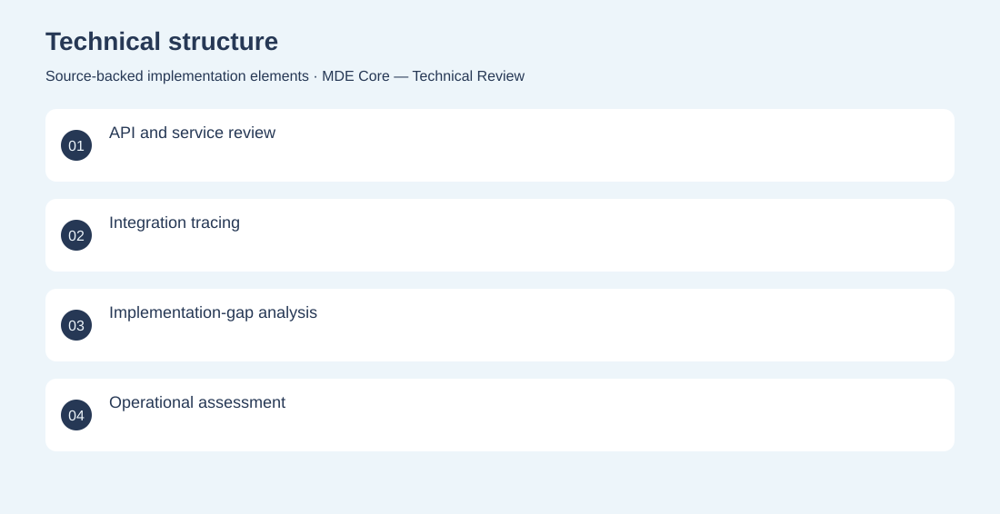
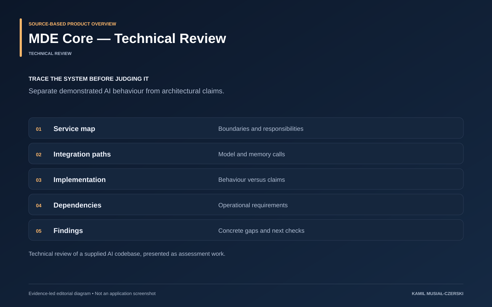

The project
A code-level assessment identifies implemented integrations, operational dependencies and gaps requiring validation. Reviewed service boundaries, traced AI integrations and documented gaps between specifications and implemented behaviour.
The problem
Complex AI systems can accumulate claims and abstractions that exceed demonstrated behaviour.
The solution
A code-level assessment identifies implemented integrations, operational dependencies and gaps requiring validation.
My contribution
Reviewed service boundaries, traced AI integrations and documented gaps between specifications and implemented behaviour.
AI capabilities
Review of conversational AI and memory integration
Technical structure

Product overview

The portfolio cover is an editorial illustration. No live product screenshot is presented for this project.
Showcase assets
{kind=link}
{kind=link}
{kind=link}
New portfolio identity. Newly designed marks are portfolio treatments, not claims of official client branding.